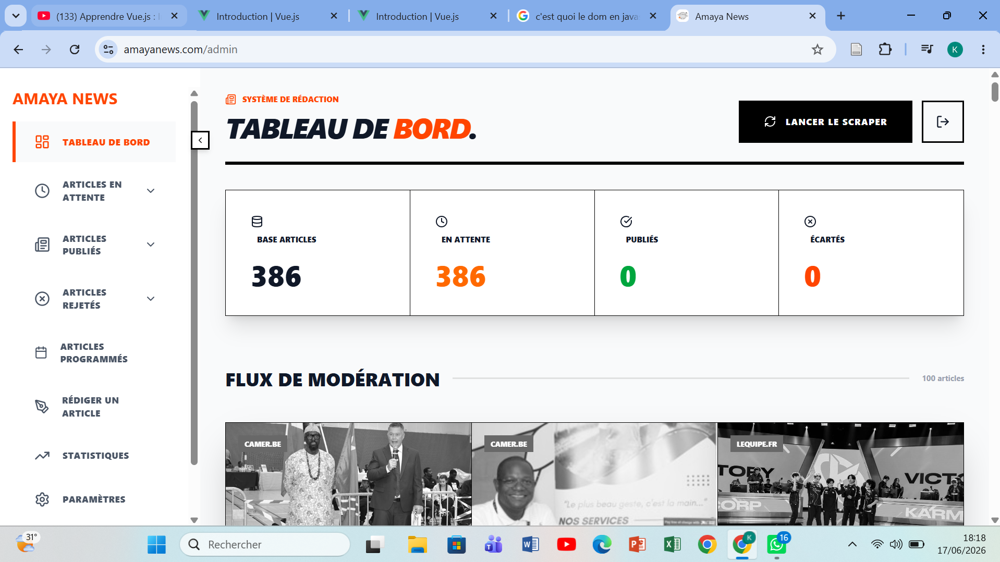
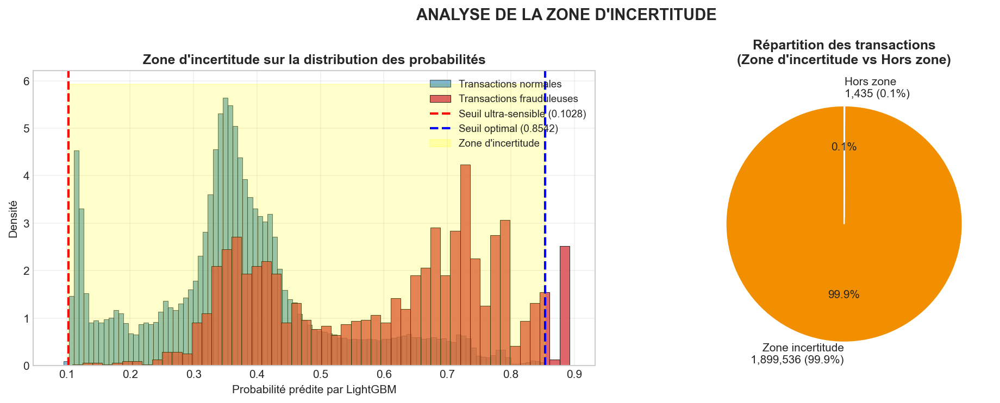

Amaya News
Plateforme d'actualités moderne développée avec React et FastAPI utilisant une base de données MongoDB.
Passionné par les technologies numériques, le Big Data et l'intelligence artificielle, je développe des applications web modernes et exploite les données pour créer des solutions innovantes à forte valeur ajoutée.
Mes compétences couvrent le développement web, l'analyse de données, le Machine Learning et la conception de solutions numériques adaptées aux besoins des entreprises.
React, Next.js, Laravel, Node.js, HTML5, CSS3, JavaScript.
Python, SQL, Machine Learning, Big Data Analytics.
Excel, Power BI, Visualisation de données et reporting.

Plateforme d'actualités moderne développée avec React et FastAPI utilisant une base de données MongoDB.
Application de commerce fesant la promotion des produits artisanaux fabriqués en côte d'Ivoire.

Optimisation d'un système de détection de blanchiment avec LightGBM et GAT.